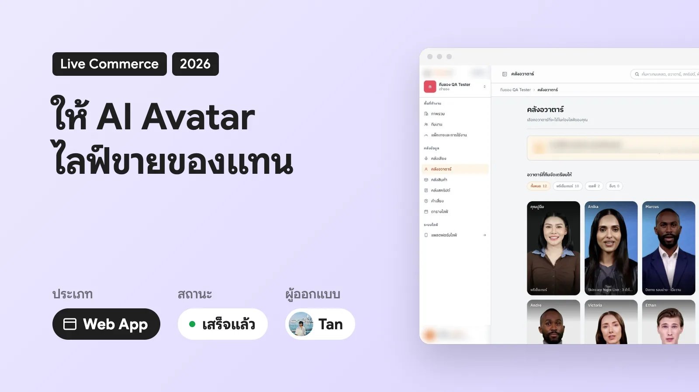
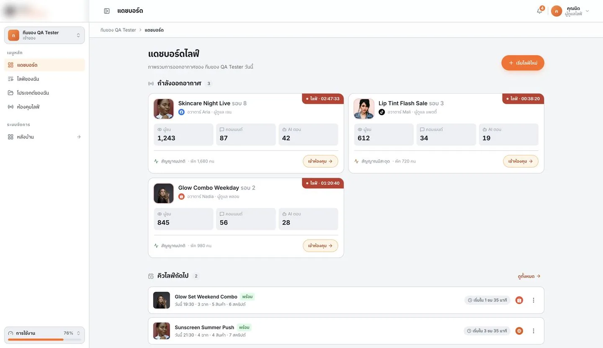
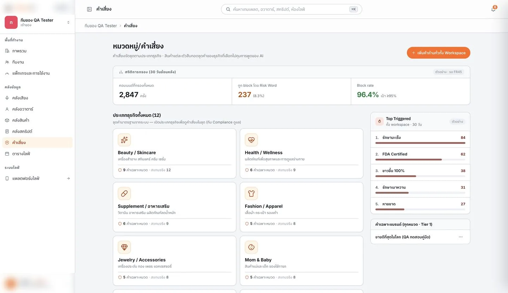
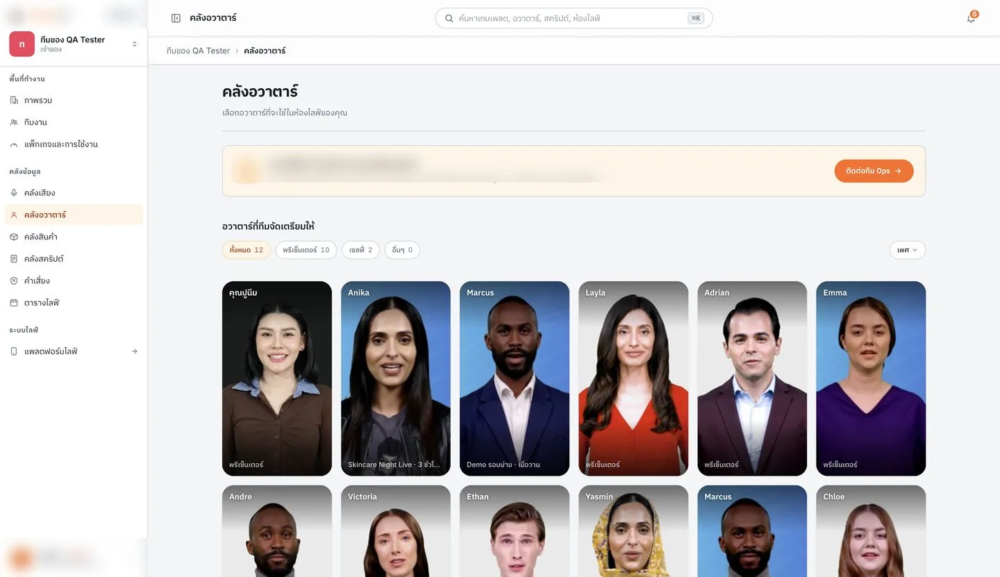
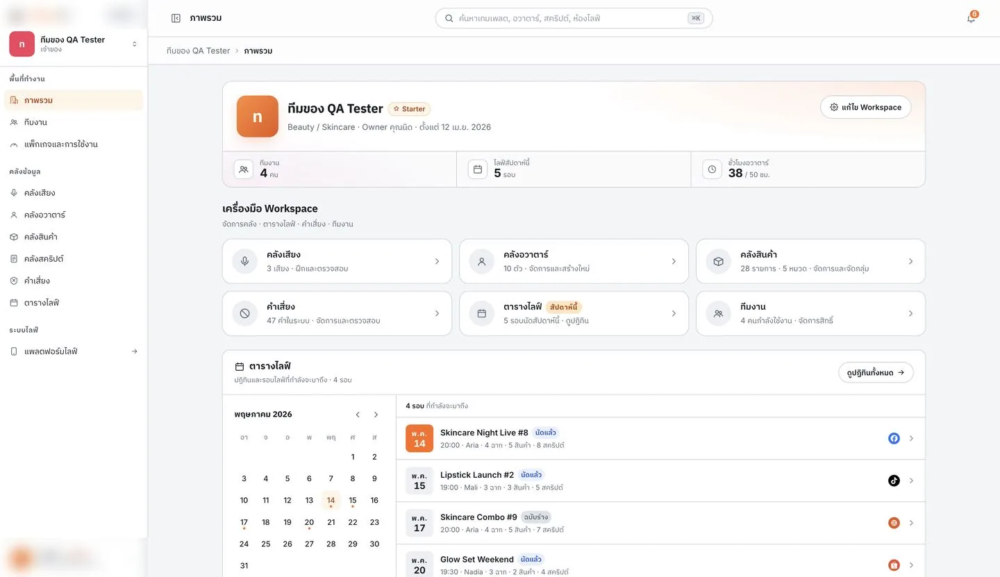
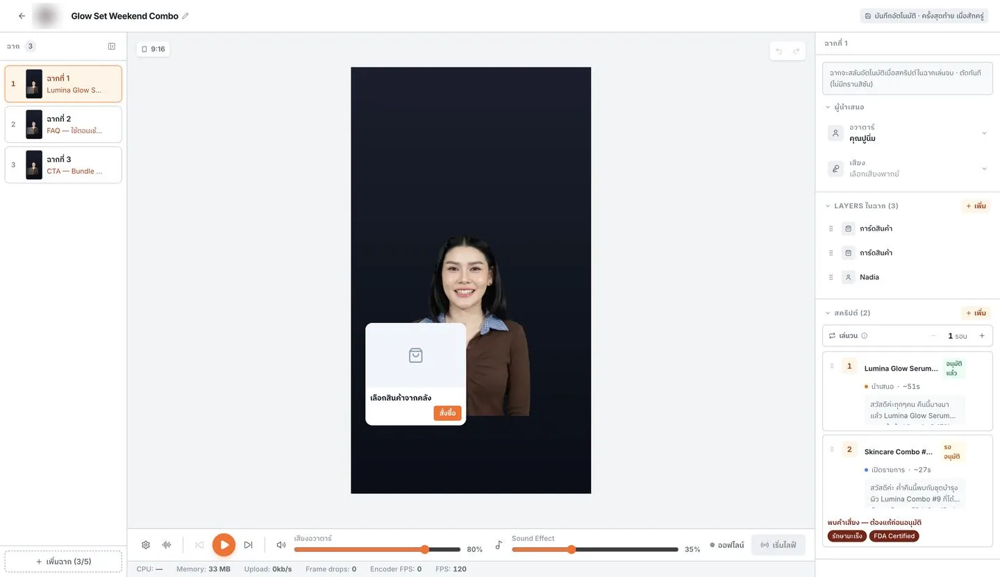
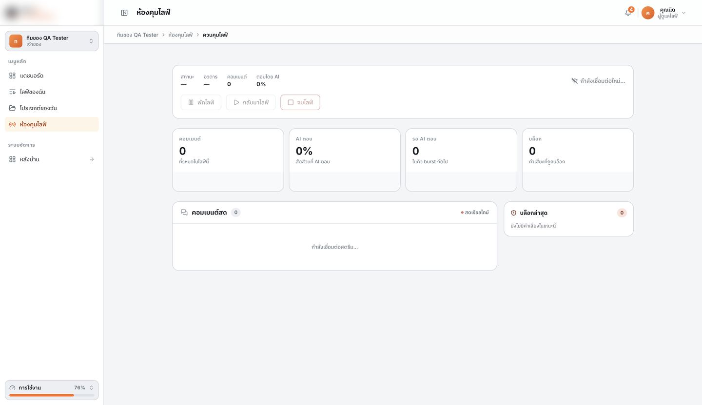
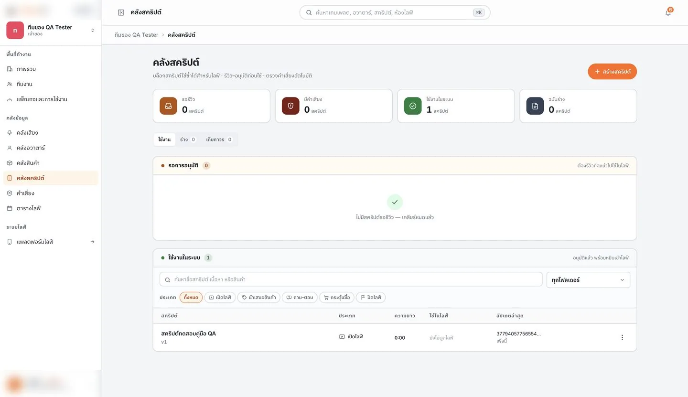
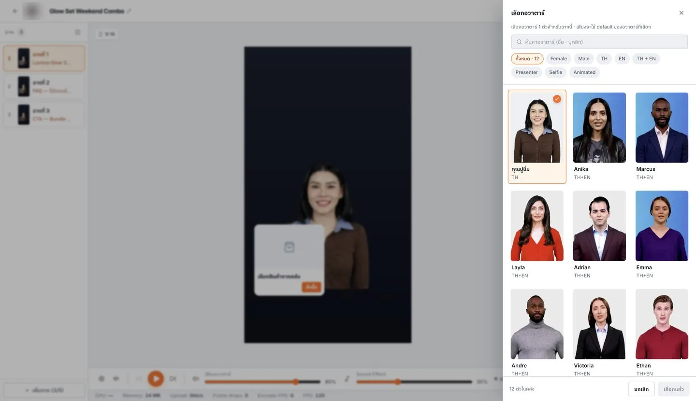
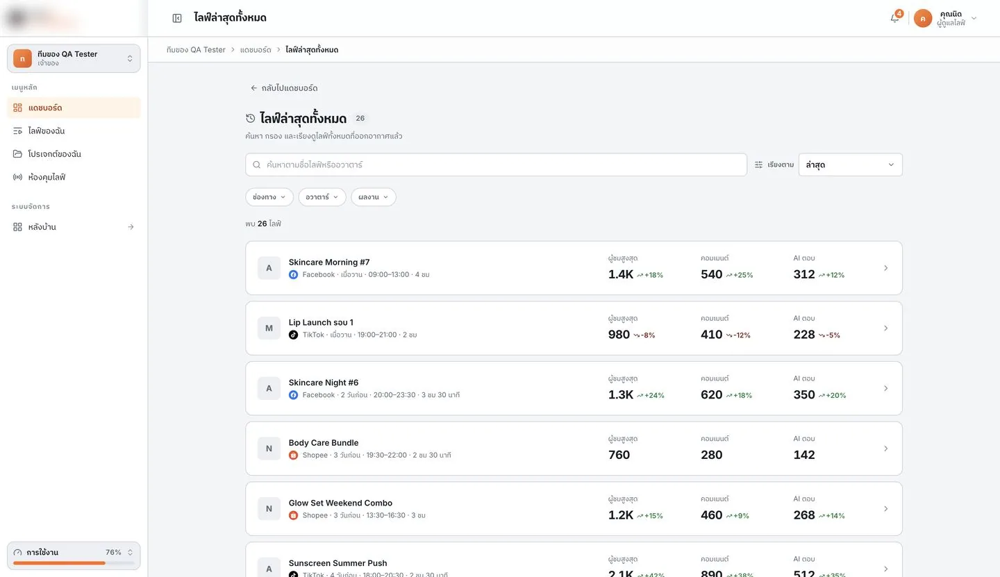

แพลตฟอร์มไลฟ์คอมเมิร์ซด้วย AI Avatar
แพลตฟอร์มไลฟ์คอมเมิร์ซด้วย AI Avatar สำหรับ SME ไทย — เป็น integration/orchestration layer เหนือ Avatar Engine เดิม เติม Live Studio, real-time Console, auto-reply pipeline และ multi-tenant back office ให้ครบ loop สร้างบน monorepo (Next.js 16 · NestJS/Fastify · Drizzle/Postgres RLS) ด้วยแนวทาง TDD + contract-first

Operating System สำหรับไลฟ์ขายของด้วย AI Avatar — เป็น integration / orchestration layer เหนือ Avatar Engine ที่มีอยู่เดิม (TTS · lip-sync · render · RAG) แล้วเติมส่วนที่ขาด: Live Studio, real-time Console, auto-reply pipeline และ multi-tenant back office ให้ครบ loop ตั้งแต่จัดฉากถึงปิดการขาย
ปัญหาที่เจอ
ทำไมร้านค้า SME ถึงไลฟ์ขายของ "ต่อเนื่อง" ไม่ได้ ทั้งที่ทุกชั่วโมงที่ไลฟ์ = โอกาสขาย?

Host มนุษย์ไลฟ์ได้จำกัด — พักก็ต้องพัก นอกเวลาก็ไม่มีคน ร้านเล็กหลายที่ยังไม่มี Host ด้วยซ้ำ ชั่วโมงที่ไม่มีใครไลฟ์คือยอดที่หายไปเฉยๆ ขณะเดียวกันเครื่องมือ AI avatar ที่มีในตลาดส่วนใหญ่ทำได้แค่ "อัดวิดีโอ" ไม่ใช่ "ไลฟ์" และไม่มี commerce loop — ตอบคอมเมนต์สด สลับสินค้า ปิดการขาย ไม่ได้
Host ไลฟ์ได้จำกัดชั่วโมง
คนต้องพัก ต้องนอน ไลฟ์นอกเวลาทำการ/ดึกๆ แทบเป็นไปไม่ได้ — ชั่วโมงว่างที่ไม่มีใครไลฟ์คือ demand ที่ปล่อยหลุด โดยเฉพาะร้านที่ยังไม่มี Host ประจำ
ต้นทุน Host หลายกะสูง
จะไลฟ์ครอบคลุมทั้งวันต้องจ้างหลายคนหลายกะ — SME แบกไม่ไหว ทำให้เลือกไลฟ์ได้แค่บางช่วง เสียโอกาสในชั่วโมงที่ traffic ดีแต่ไม่มีคนไลฟ์
คอมเมนต์ถล่ม ตอบไม่ทัน
ช่วง peak ลูกค้าถามราคา/สต็อก/โปร พร้อมกันเป็นสิบ — ตอบช้าคือปิดการขายไม่ได้ และตอบผิด/ตอบเกินจริงเรื่องสรรพคุณก็เสี่ยงด้านกฎหมาย
เครื่องมือ AI avatar = async ไม่ใช่ไลฟ์
tool ทำวิดีโอ avatar ที่มีอยู่ตอบโต้สดไม่ได้ ไม่มี live commerce loop (สลับสินค้า, CTA timing, ตอบคอมเมนต์สด) — ใช้ปิดการขายแบบไลฟ์จริงไม่ได้
หลายร้าน/หลาย workspace ข้อมูลต้องแยกเด็ดขาด
แพลตฟอร์มที่ให้ Agency ดูแลลูกค้าหลายราย = ข้อมูลข้ามร้านห้ามรั่วแม้แถวเดียว — ทำ isolation เองแบบ manual พลาดง่ายและตรวจยาก
วิธีแก้ปัญหา
ไม่สร้าง core AI ใหม่ — ต่อยอด Avatar Engine เดิม แล้วทำส่วนที่ขาดให้ครบ loop ไลฟ์คอมเมิร์ซ

Integration layer เหนือ Avatar Engine
Engine เดิมมี TTS / lip-sync / render / RAG อยู่แล้ว — แพลตฟอร์มไลฟ์ AI Avatar ทำหน้าที่ wire trigger logic, ป้อน script/สินค้า context, จัด session lifecycle ไม่สร้าง avatar core ใหม่ให้ซ้ำซ้อน
Live Studio จัดฉาก + ไลฟ์ผ่านอุปกรณ์จริง
Compose ฉาก/เลเยอร์/สินค้าแบบ free-form บน canvas เดียว แล้ว broadcast ผ่านอุปกรณ์จริงของร้าน (phone-as-camera) — avatar พูดตาม script ที่ผูกกับสินค้า
Auto-Reply pipeline พร้อม Risk Filter
Comment → intent detection → Risk Keyword block ก่อนตอบ → Reply Burst จัดคิว priority (ราคา/สต็อกแทรกก่อน) ให้ avatar ตอบสดในงบ latency ที่กำหนด
Live Console real-time (SSE)
Manager เฝ้าดูสถานะ avatar, สุขภาพสตรีม, ฟีดคอมเมนต์, และ risk panel แบบสด ผ่าน SSE stream ที่ทน reconnect + รักษาลำดับ + กัน event ซ้ำ
Multi-tenant แยกข้อมูลระดับฐานข้อมูล
ทุก query ผูก workspace_id + Postgres RLS เป็นด่านสุดท้าย (Model B tenancy: authority อยู่ที่ hub กลาง, identity แยกที่ Zitadel) — isolation เป็น non-negotiable มี negative test คุม
วิธีทำงาน — 4 จังหวะ
ตั้งแต่เตรียม avatar/สินค้า จนถึงปิดการขายและสรุปผล

ตั้งค่า
เลือก Avatar/Voice, ทำ Product Catalog + Risk Words, ตั้ง Live Schedule
Compose Studio
จัดฉาก/เลเยอร์/สินค้า + เขียน script เอง หรือให้ AI gen
Broadcast
ไลฟ์ผ่านอุปกรณ์จริง avatar พูดตาม script ผูกกับสินค้า
Engage + สรุป
auto-reply คอมเมนต์ + Console เฝ้าดู → Post-Live Recap
Tech Stack & Architecture
Monorepo (pnpm workspaces) — Next.js PWA + NestJS/Fastify API + Drizzle/Postgres พร้อม external integrations

NestJS 11 + Fastify — Live Orchestrator เป็น long-running process (route handler ไม่เหมาะ) + DI/module-per-feature ทำให้ scale ทีมได้ · Drizzle ORM — TS-first, schema เป็น TS ตรงกับ FE type sharing, ใกล้ raw SQL ดีต่อ multi-tenant query + audit · PostgreSQL + RLS — 100% data isolation ระดับฐานข้อมูล · Zitadel (identity) + Model B tenancy — แยก identity ออกจาก authority ของ workspace/entitlement (อยู่ที่ hub กลาง) · pnpm workspaces + OpenAPI → generated client (มี contract drift gate ใน CI) — type-safe ข้าม package โดยไม่ต้อง build matrix ซับซ้อน
สิ่งที่สร้าง — 8 ความสามารถหลัก
ครบ loop ตั้งแต่ back office ถึงไลฟ์สดและสรุปผลหลังไลฟ์

Multi-tenant Workspace & Roles
4 roles (Owner/Manager/Admin/Agency) + workspace scoping ทุก query + RLS — Agency ดูหลาย workspace ได้โดยข้อมูลไม่ปน
Catalog & Live Schedule
Product/SKU/Product Set CRUD + Live Schedule ผูกกับ LiveSession state machine 8 สถานะ (Live/Paused/Completed/Interrupted ฯลฯ)
Live Studio (free-form)
Compositor จัดฉากแบบ free-form — scenes ≤5, layers ≤10/scene, 9 layer types + custom upload + auto-switch เมื่อ script จบ
AI Script Generation
8 script types + multi-content ต่อ slot (1-5) + lifecycle 5 สถานะ gate ด้วย role + risk check ต่อ content + rotation/cool-down/shuffle
แพลตฟอร์มไลฟ์ AI Avatar Broadcasting
Phone-as-camera PWA + WebRTC composition + session cap 20 นาที + preload & seamless handover ให้ไลฟ์ต่อเนื่องไม่สะดุด
Comment Auto-Reply
Intent detection + Risk Keyword block ก่อนตอบ + Reply Burst ≤6/batch จัด priority P1/P2/P3 + per-script TTL drop
Live Console (SSE)
Monitor สด: session list + Control Room + comment feed + risk panel ผ่าน SSE stream ที่ auto-reconnect + รักษาลำดับ
Post-Live Recap
Aggregate AI-outcomes ต่อ session แล้ว join กับ raw comments ที่ pull จาก source — rebuild-from-source ได้ ไม่ผูกกับ snapshot อย่างเดียว
หน้าตา Live Console
Manager เปิด Console → เห็นสถานะ avatar, ฟีดคอมเมนต์, และ risk panel สดในหน้าจอเดียว

| Comment | Intent | Action | |
|---|---|---|---|
| ตัวนี้ราคาเท่าไหร่คะ | price | Reply Burst · P1 แทรกก่อน | auto |
| ไซซ์ L ยังมีมั้ย | stock | Reply Burst · P1 | auto |
| อยากได้สีเดียวกับพี่เลย | chit-chat | P3 · drop เมื่อ script ถัดไปมา | queued |
directive --force-cta product=SKU-4821 --say 'กดตะกร้าเลยนะคะ เหลือ 5 ชิ้นสุดท้าย'
Hack กับปัญหา
6 โจทย์วิศวกรรมที่ต้องออกแบบทางแก้เอง — multi-tenant, real-time, integration lifecycle

ข้อมูลข้าม workspace ห้ามรั่วแม้แถวเดียว
Agency ดูหลายร้านใน dashboard เดียว — พลาด scope query แค่ครั้งเดียวก็ข้อมูลรั่วข้ามลูกค้า ซึ่งเป็น non-negotiable
workspace_id scoping ทุก query + Postgres RLS เป็นด่านสุดท้ายที่ DB, มี ESLint guard กันเขียน query ที่ไม่ scope, และ negative isolation test ยืนยันว่าไม่มี leak — isolation ฝังใน Definition of Done ไม่ดองไป hardening ท้ายใครเป็นเจ้าของข้อมูล tenancy? (Model B)
ทั้ง ecosystem มีหลาย product — ถ้าแต่ละตัวเก็บ workspace/membership/subscription เองจะ sync ไม่ตรงและ entitlement เพี้ยน
คอมเมนต์ถล่ม แต่ avatar ตอบได้ทีละอย่าง
ช่วง peak คอมเมนต์เข้ามาพร้อมกันเป็นสิบ — ตอบทุกอันไม่ได้และไม่ควร ต้องเลือกตอบอันสำคัญก่อนในงบเวลาที่จำกัด
Console ต้องสด แต่เน็ตหลุด/ต่อใหม่ตลอด
ไลฟ์บนมือถือเน็ตกระตุก — ถ้า stream หลุดแล้ว event หาย/ซ้ำ/สลับลำดับ Manager จะอ่านสถานะผิดและตัดสินใจพลาด
ต่อกับ engine/service ภายนอกที่ยังไม่มีจริง
Avatar Engine, comment source และ Hub บาง endpoint ยังไม่พร้อมตอนเริ่ม dev — ถ้ารอให้เสร็จก่อนถึงเขียน integration จะบล็อกทั้ง pipeline
Engine cap session 20 นาที แต่ไลฟ์ต้องต่อเนื่อง
Avatar Engine ปิด session ทุก 20 นาที — ถ้าปล่อยให้จบดื้อๆ ภาพจะกระตุก เสียงขาด ผู้ชมรู้สึกสะดุดทันที
Design Decision ที่ตั้งใจเลือก
ขอบเขตที่จงใจ "ไม่ทำ" สำคัญพอๆ กับสิ่งที่ทำ

แพลตฟอร์มไลฟ์ AI Avatar ไม่สร้าง core avatar ใหม่ — TTS, lip-sync, render, RAG, latency ≤2s, GPU pooling มีอยู่ใน Avatar Engine เดิมแล้ว จึงโฟกัสเป็น integration layer: จัด orchestration + commerce loop + multi-tenant back office + real-time console. Positioning ก็คมตั้งแต่ต้น — เสริม Host ไม่ใช่แทน ปลดล็อกชั่วโมงที่คนทำไม่ได้ ขอบเขตที่ชัด = implement ตรง maintain ง่าย
ต่อยอด engine เดิม ไม่สร้าง avatar core ซ้ำ
RLS + workspace scoping + negative test คุมทุก PR
red → green → refactor · test ฝังใน DoD
ปลดล็อกชั่วโมงที่คนทำไม่ได้ — positioning ชัด
Knowledge Domain ที่แข็งขึ้น
5 พื้นที่ความรู้ที่ระดับเราขยับขึ้นจริงจากการทำโปรเจกต์นี้

เข้าใจการทำ data isolation หลายชั้น — workspace_id scoping ที่ application, Postgres RLS ที่ฐานข้อมูล, ESLint guard กันพลาดตั้งแต่เขียนโค้ด, และ negative test ยืนยันว่าไม่รั่ว รวมถึง tenancy authority split (Model B — authority ที่ hub, identity ที่ Zitadel) บทเรียน: isolation ที่ดีคือหลายด่านที่ทดสอบได้ ไม่ใช่ความตั้งใจดี
ออกแบบ Reply Burst เป็น priority queue (P1/P2/P3 + TTL drop) ให้ตอบตรงจังหวะภายใต้งบ latency, และ SSE console stream ที่ทน reconnect + รักษา ordering + dedupe + backpressure บทเรียน: real-time ที่เชื่อถือได้ต้องออกแบบ failure mode (หลุด/ซ้ำ/ตามไม่ทัน) ไว้ตั้งแต่แรก ไม่ใช่ best-effort
จัด pnpm workspaces (apps + shared packages: db/auth/types/api-client/engine-contracts), gen client จาก OpenAPI พร้อม drift gate, และเขียน contract test แบบ network-free (red-first) กับ external services ที่ยังไม่มีจริง บทเรียน: contract คือสัญญาที่ให้ทีม/service คู่ขนานเดินไปพร้อมกันได้โดยไม่บล็อกกัน
ออกแบบ layer ที่ครอบ Avatar Engine เดิมโดยไม่แตะ core — จัด preload/handover ให้ session cap 20 นาทีดูต่อเนื่อง (audio ≤200ms / visual ≤100ms / pose continuity) และ adapter pattern รองรับ provider ใหม่ในอนาคต บทเรียน: การต่อของที่มีอยู่ให้ "ไร้รอยต่อ" ยากกว่าการเขียนใหม่ และคุ้มกว่ามาก
วาง module-per-feature (21 modules) + DI, เลือก Fastify เพราะ Live Orchestrator เป็น long-running process, ใช้ Drizzle (TS-first ORM ที่ใกล้ raw SQL) คู่กับ migration discipline (versioned · idempotent · fail-loud เมื่อ schema ไม่ตรง) บทเรียน: โครงสร้างที่คุมด้วย convention + guard ทำให้ solo dev ดูแลระบบใหญ่ได้โดยไม่พัง